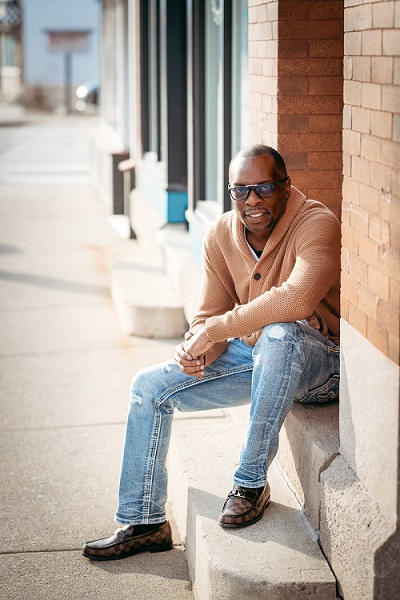

A New Digital Hub to Protect Our Minds, Uplift Our Spirits, and Unite as One Body in Christ
Indianapolis, IN – In a time where social media has become a double-edged sword—connecting the world yet silently eroding the mental, emotional, and spiritual health of our people—Suffragan Bishop James Hawkins is sounding the trumpet to all faith-based leaders, churches, ministries, and believers: The time to act is now.
Bishop Hawkins, with over 30 years of faithful service in ministry, has co-founded a transformational digital platform and gated online community built exclusively for the faith-based world. It is a sanctuary for believers—a space where faith, fellowship, collaboration, and innovation can flourish without compromise.
“We can no longer allow the world to define the voice of the church. We must build our own digital ecosystem, rooted in prayer, purpose, and power.”
Bishop James Hawkins

This platform—a digital Promised Land—includes over 15 built-in tools and features that allow members to engage, grow, and build in unity:
With a monthly offering of just $9.99 per member, this storefront maintains the platform and gives back with weekly giveaways to those in need. A lighter $5.99/month option ensures access for everyone.
This is more than a platform—it’s a movement to shift digital culture where faith leads, not fear.
Members can create personalized prayer days, turning emotional healing and spiritual connection into daily essentials. When you cry out, others answer. When you build, others come. This is faith in action—and it’s happening now.
Bishop James Hawkins is a respected author, pastor, and Vice President of the African American Council of Churches. His book, Spiritual Indictment, and his work across ministries reflect a heart for God's people. From Venezuela to Toledo, he now stands as a digital pioneer calling the church to reclaim its voice online.
“Social media is not free—it costs us our peace, our identity, and our youth,” says Hawkins. “We must rise above it and boldly build for Christ.”